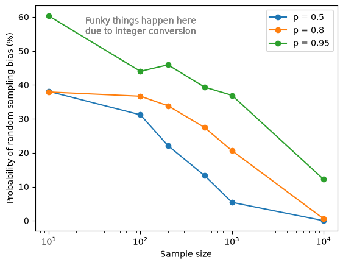
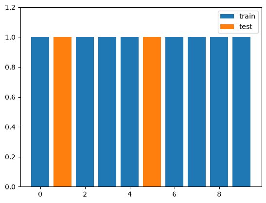
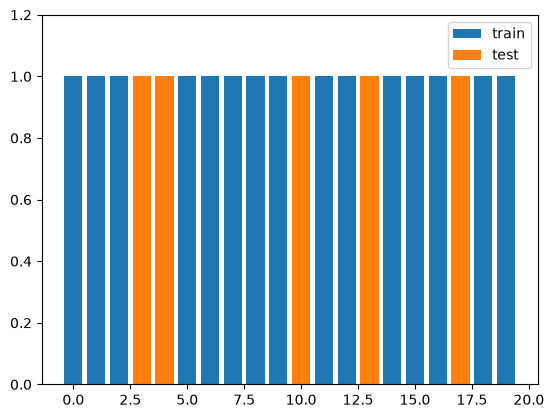
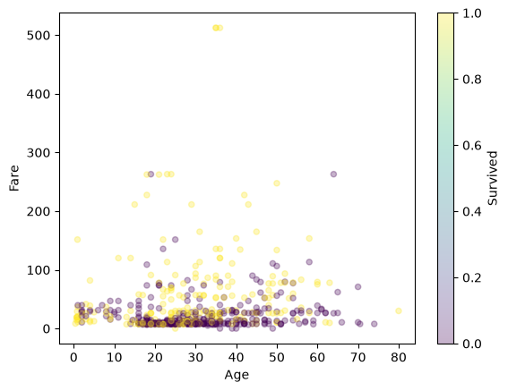
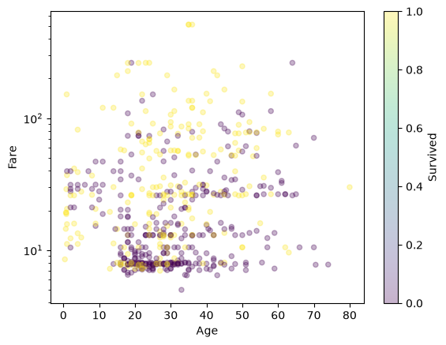
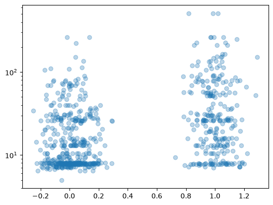
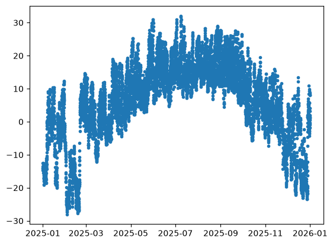
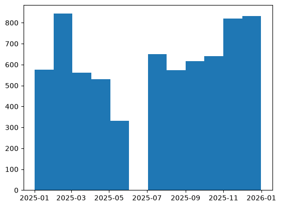
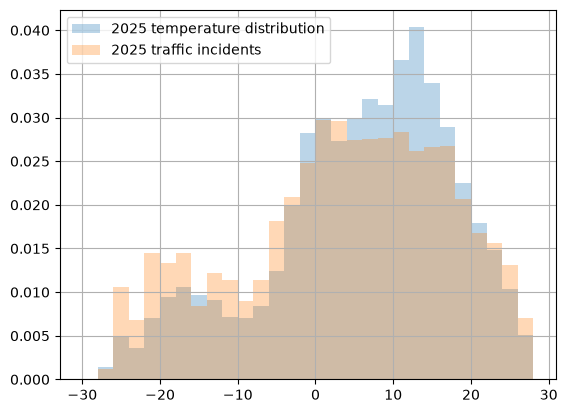

import numpy as np
import pandas as pd
import matplotlib.pyplot as plt
from pandas.plotting import scatter_matrix
from sklearn.model_selection import train_test_splitSplitting demos
A brief example of sampling bias
from scipy.stats import binom
import matplotlib.pyplot as plt
p = 0.8 # ratio of likes cilantro to dislikes cilantro
buffer = 0.05 # plus/minus 5%
sample_sizes = [10, 100, 200, 500, 1000, 10000]
for p in [0.5, 0.8, 0.95]:
prob_bias = []
for n in sample_sizes:
# compute the buffer size relative to the underrepresented class
small_buffer = (buffer * n * (1 - p))
too_small = n * p - small_buffer
too_large = n * p + small_buffer
prob_bias.append(binom(n, p).cdf(too_small) + (1 - binom(n, p).cdf(too_large)) * 100)
plt.plot(sample_sizes, prob_bias, "o-", label=f"p = {p}")
plt.xlabel("Sample size")
plt.ylabel("Probability of random sampling bias (%)")
plt.xscale("log")
plt.text(25, 55, "Funky things happen here\ndue to integer conversion", color="grey")
plt.legend()
plt.show()
print("For p = 0.95")
for n, b in zip(sample_sizes, prob_bias):
small_buffer = (buffer * n * (1 - p))
too_small = n * p - small_buffer
too_large = n * p + small_buffer
print(f"Sample size {n}: Bias = {b:.1f}% chance of sampling < {too_small:.1f} or > {too_large:.1f}")
For p = 0.95
Sample size 10: Bias = 60.3% chance of sampling < 9.5 or > 9.5
Sample size 100: Bias = 44.0% chance of sampling < 94.8 or > 95.2
Sample size 200: Bias = 45.9% chance of sampling < 189.5 or > 190.5
Sample size 500: Bias = 39.4% chance of sampling < 473.8 or > 476.2
Sample size 1000: Bias = 36.9% chance of sampling < 947.5 or > 952.5
Sample size 10000: Bias = 12.2% chance of sampling < 9475.0 or > 9525.0Sampling with updated data: random vs feature hashing
# create random number generator
rng = np.random.default_rng(seed=42)
N = 10
ids = np.arange(N)
train = rng.choice(ids, N * 8 // 10, replace=False)
test = np.delete(ids, train)
print("Train:", train)
print("Test: ", test)
plt.bar(train, np.ones_like(train), label="train")
plt.bar(test, np.ones_like(test), label="test")
plt.ylim([0,1.2])
plt.legend()Train: [8 9 7 4 6 2 0 3]
Test: [1 5]
# deterministic approach: hashing
from zlib import crc32
# 80% of the maximum possible 32-bit hash value
test_thresh = 0.8 * 2**32
N = 20
ids = np.arange(N)
hash_vals = np.array([crc32(id) for id in ids])
train = ids[hash_vals < test_thresh]
test = np.delete(ids, train)
print(hash_vals)
print("Train:", train)
print("Test: ", test)
plt.bar(train, np.ones_like(train), label="train")
plt.bar(test, np.ones_like(test), label="test")
plt.ylim([0,1.2])
plt.legend()[1696784233 2844319735 654825492 3954038922 3781742995 767742221
2739787502 1877464688 3066545372 2054014018 4108501921 944292671
848153126 4264020664 1890110811 3154300357 429518402 3576950492
1539107135 2534861217]
Train: [ 0 1 2 5 6 7 8 9 11 12 14 15 16 18 19]
Test: [ 3 4 10 13 17]
Titanic Example
# Load the titanic data again
td = pd.read_csv("../03_eda/titanic_train.csv")td.info()<class 'pandas.DataFrame'>
RangeIndex: 891 entries, 0 to 890
Data columns (total 12 columns):
# Column Non-Null Count Dtype
--- ------ -------------- -----
0 PassengerId 891 non-null int64
1 Survived 891 non-null int64
2 Pclass 891 non-null int64
3 Name 891 non-null str
4 Sex 891 non-null str
5 Age 714 non-null float64
6 SibSp 891 non-null int64
7 Parch 891 non-null int64
8 Ticket 891 non-null str
9 Fare 891 non-null float64
10 Cabin 204 non-null str
11 Embarked 889 non-null str
dtypes: float64(2), int64(5), str(5)
memory usage: 83.7 KB# Splitting the data - random sample
# at minimum, needs random seed for consistency
td_train, td_test = train_test_split(td, test_size=0.2, random_state=1234)# Check the ratios
print(td_train["Sex"].value_counts() / len(td_train))
print(td_test["Sex"].value_counts() / len(td_test))Sex
male 0.640449
female 0.359551
Name: count, dtype: float64
Sex
male 0.675978
female 0.324022
Name: count, dtype: float64# Splitting the data - stratified sample
# Want to make sure equal ratios of sex in train and test
td_train, td_test = train_test_split(td, test_size=0.2, random_state=1234, stratify=td[["Survived", "Sex"]])# Check the ratios
print(td_train["Survived"].value_counts() / len(td_train))
print(td_test["Survived"].value_counts() / len(td_test))Survived
0 0.616573
1 0.383427
Name: count, dtype: float64
Survived
0 0.614525
1 0.385475
Name: count, dtype: float64# scatter plots
# Is there a relationship between age/fare and survival?
ax = td_train.plot.scatter(x="Age", y="Fare", c="Survived", cmap="viridis", alpha=0.3)
# maybe a log scale would help?
# TODO: set_yscale to log
ax = td_train.plot.scatter(x="Age", y="Fare", c="Survived", cmap="viridis", alpha=0.3)
ax.set_yscale("log")
# box plots
ax = td_train.boxplot(by="Survived", column="Fare")
# TODO: set_yscale to logx = td_train["Survived"]
y = td_train["Fare"]
# plt.scatter(x, y, alpha=0.3)
# add jitter
rng = np.random.default_rng(seed=1234)
jitter = rng.normal(size=x.shape, scale=0.1)
fig, ax = plt.subplots(1)
ax.scatter(x+jitter, y, alpha=0.3)
ax.set_yscale("log")
Combining data
Data usually comes from different sources. For example, let’s say I want to find the temperature closest to a given road incident.
Climate data source: https://collaboration.cmc.ec.gc.ca/cmc/climate/Get_More_Data_Plus_de_donnees/Command_Lines_EN.txt
Traffic data source: https://data.calgary.ca/Transportation-Transit/Traffic-Incidents/35ra-9556/about_data
# %%bash
# for month in `seq 1 12`; do wget --content-disposition "https://climate.weather.gc.ca/climate_data/bulk_data_e.html?format=csv&climate_id=3031092&Year=2025&Month=${month}&Day=14&timeframe=1&submit=Download+Data" ;donefrom pathlib import Path
dfs = []
for csv in Path(".").glob("en_climate*.csv"):
dfs.append(pd.read_csv(csv))
climate = pd.concat(dfs, axis=0)climate.info()<class 'pandas.DataFrame'>
Index: 8760 entries, 0 to 743
Data columns (total 31 columns):
# Column Non-Null Count Dtype
--- ------ -------------- -----
0 Longitude (x) 8760 non-null float64
1 Latitude (y) 8760 non-null float64
2 Station Name 8760 non-null str
3 Climate ID 8760 non-null int64
4 Date/Time (LST) 8760 non-null str
5 Year 8760 non-null int64
6 Month 8760 non-null int64
7 Day 8760 non-null int64
8 Time (LST) 8760 non-null str
9 Flag 0 non-null float64
10 Temp (°C) 8752 non-null float64
11 Temp Flag 0 non-null float64
12 Dew Point Temp (°C) 8752 non-null float64
13 Dew Point Temp Flag 0 non-null float64
14 Rel Hum (%) 8752 non-null float64
15 Rel Hum Flag 0 non-null float64
16 Precip. Amount (mm) 0 non-null float64
17 Precip. Amount Flag 0 non-null float64
18 Wind Dir (10s deg) 8358 non-null float64
19 Wind Dir Flag 0 non-null float64
20 Wind Spd (km/h) 8752 non-null float64
21 Wind Spd Flag 0 non-null float64
22 Visibility (km) 8752 non-null float64
23 Visibility Flag 0 non-null float64
24 Stn Press (kPa) 8751 non-null float64
25 Stn Press Flag 1 non-null object
26 Hmdx 303 non-null float64
27 Hmdx Flag 0 non-null float64
28 Wind Chill 2317 non-null float64
29 Wind Chill Flag 0 non-null float64
30 Weather 3776 non-null str
dtypes: float64(22), int64(4), object(1), str(4)
memory usage: 2.1+ MBincidents = pd.read_csv("Traffic_Incidents_20260928.csv")incidents.info()<class 'pandas.DataFrame'>
RangeIndex: 6977 entries, 0 to 6976
Data columns (total 10 columns):
# Column Non-Null Count Dtype
--- ------ -------------- -----
0 INCIDENT INFO 6977 non-null str
1 DESCRIPTION 6977 non-null str
2 START_DT_UTC 6977 non-null str
3 MODIFIED_DT_UTC 6977 non-null str
4 QUADRANT 6977 non-null str
5 Longitude 6977 non-null float64
6 Latitude 6977 non-null float64
7 Count 6977 non-null int64
8 id 6977 non-null str
9 Point 6977 non-null str
dtypes: float64(2), int64(1), str(7)
memory usage: 545.2 KB# inspect the date formats
print(climate["Date/Time (LST)"].iloc[0])
print(incidents["START_DT_UTC"].iloc[-1])2025-01-01 00:00
2025/01/01 06:03:00 PM# convert both datetime values to actual datetime objects
climate["DT"] = pd.to_datetime(climate["Date/Time (LST)"]).astype("datetime64[s]")
incidents["DT"] = (pd.to_datetime(incidents["START_DT_UTC"]) - pd.Timedelta("6 hours")).astype("datetime64[s]")C:\Users\ccurtis\AppData\Local\Temp\ipykernel_16016\661553960.py:3: UserWarning: Could not infer format, so each element will be parsed individually, falling back to `dateutil`. To ensure parsing is consistent and as-expected, please specify a format.
incidents["DT"] = (pd.to_datetime(incidents["START_DT_UTC"]) - pd.Timedelta("6 hours")).astype("datetime64[s]")# close enough, doesn't account for Standard time in summer though
incidents["DT"].iloc[0]Timestamp('2025-12-31 11:44:00')# check that that worked
plt.scatter(climate["DT"], climate["Temp (°C)"], marker=".")
plt.hist(incidents["DT"], bins=12)(array([575., 843., 562., 530., 332., 2., 651., 574., 617., 640., 820.,
831.]),
array([20089.50208333, 20119.83431713, 20150.16655093, 20180.49878472,
20210.83101852, 20241.16325231, 20271.49548611, 20301.82771991,
20332.1599537 , 20362.4921875 , 20392.8244213 , 20423.15665509,
20453.48888889]),
<BarContainer object of 12 artists>)
incidents.sort_values(by="DT", ascending=True, inplace=True)
df = pd.merge_asof(incidents, climate, on="DT", direction="nearest")bins = np.arange(-30, 30, 2)
climate["Temp (°C)"].hist(density=True, bins=bins, label="2025 temperature distribution", alpha=0.3)
df["Temp (°C)"].hist(density=True, bins=bins, label="2025 traffic incidents", alpha=0.3)
plt.legend()